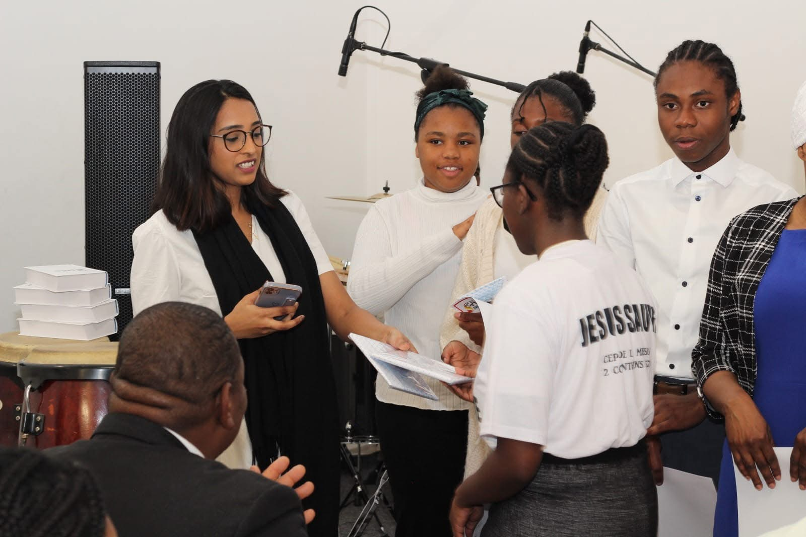
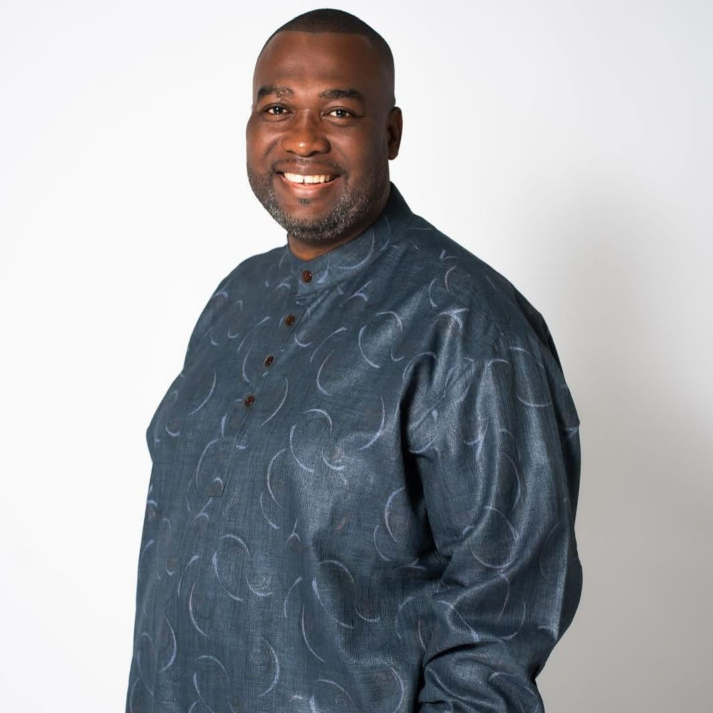
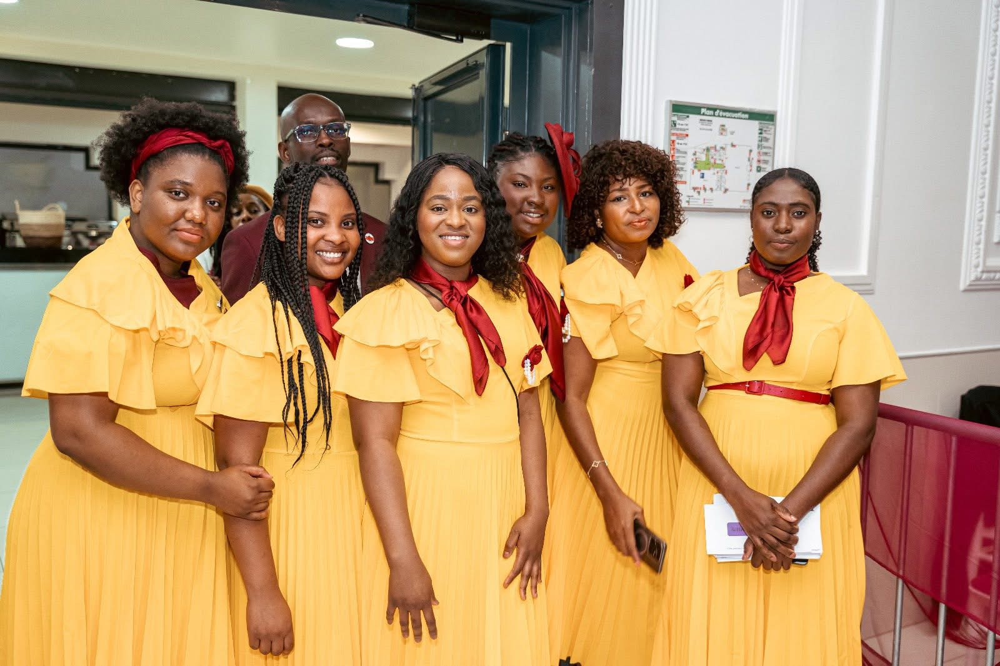
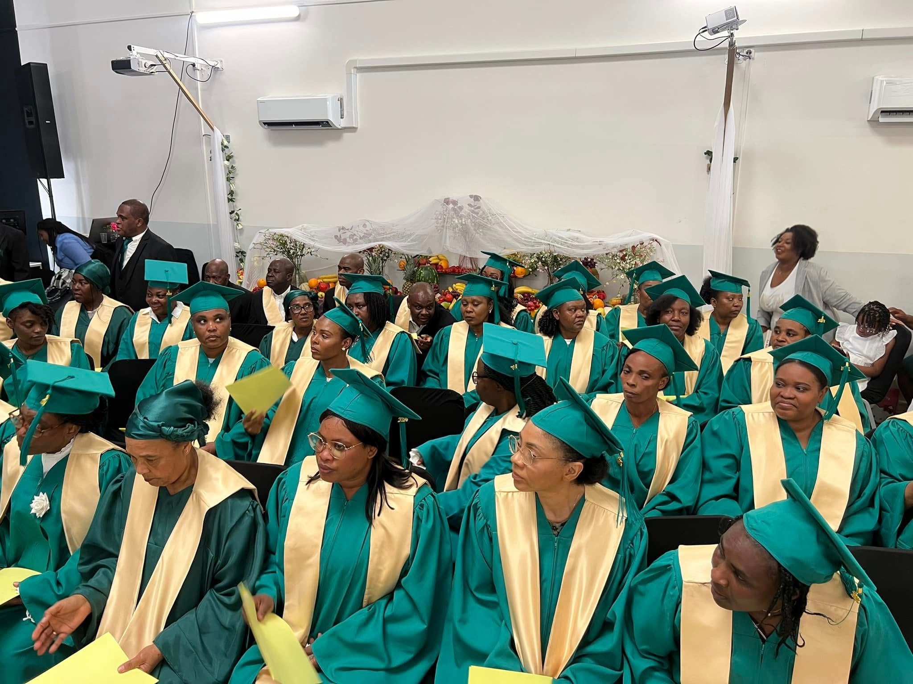
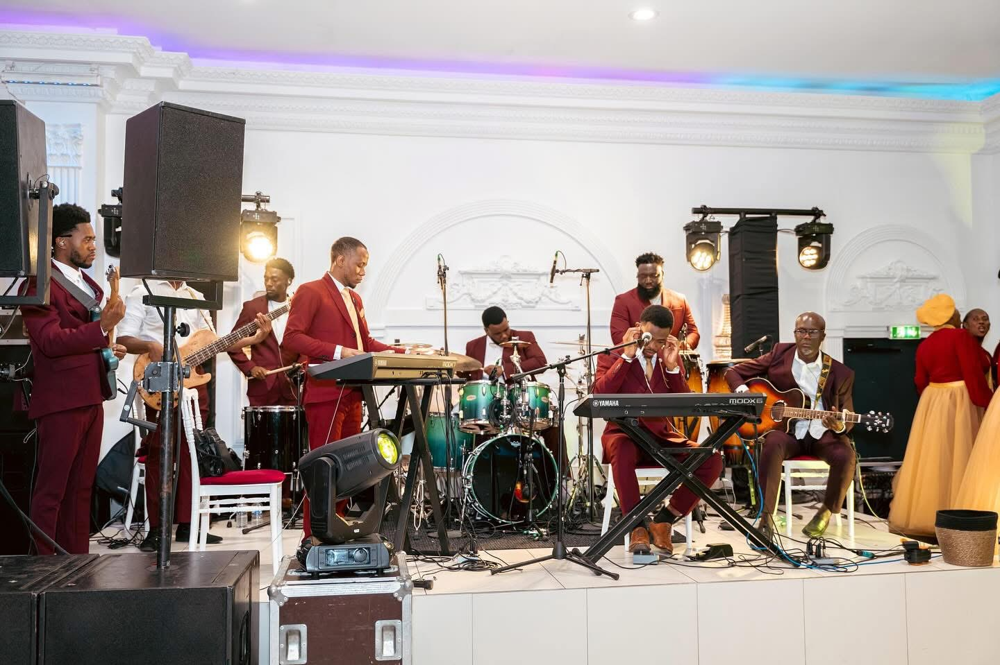
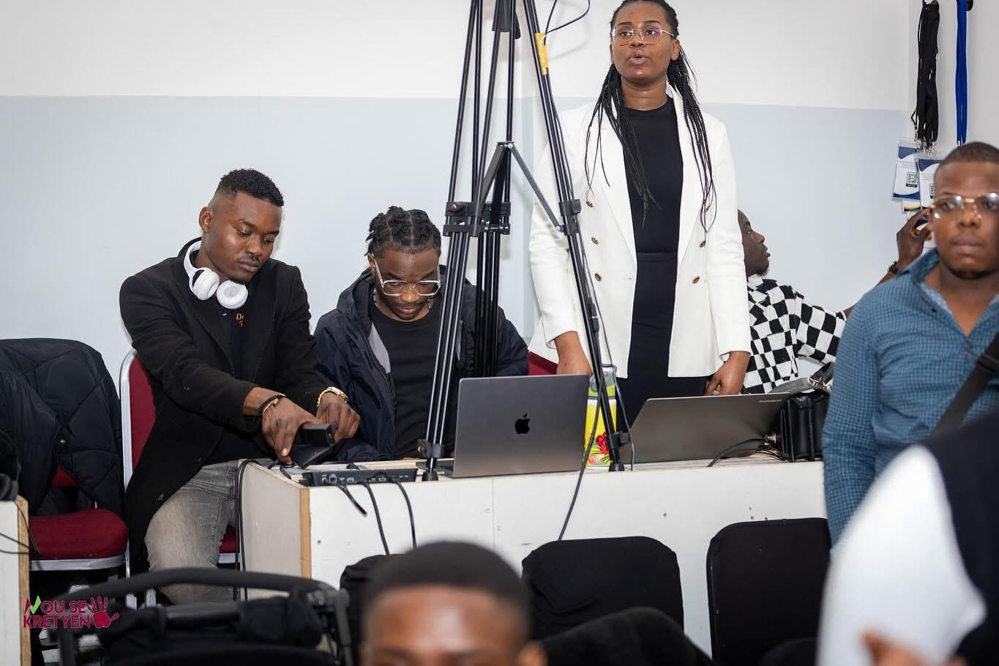
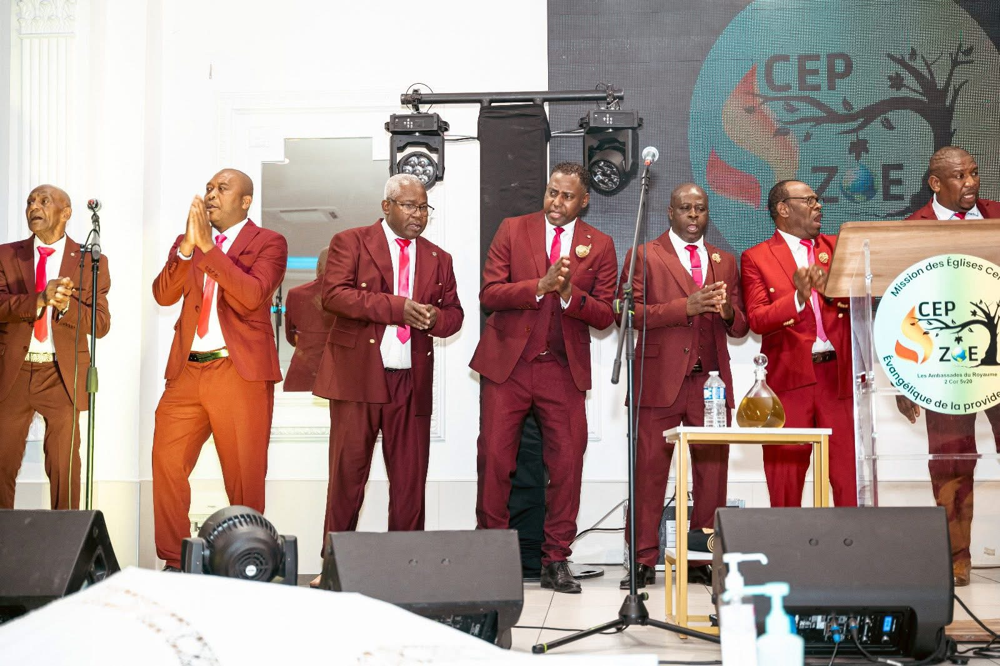
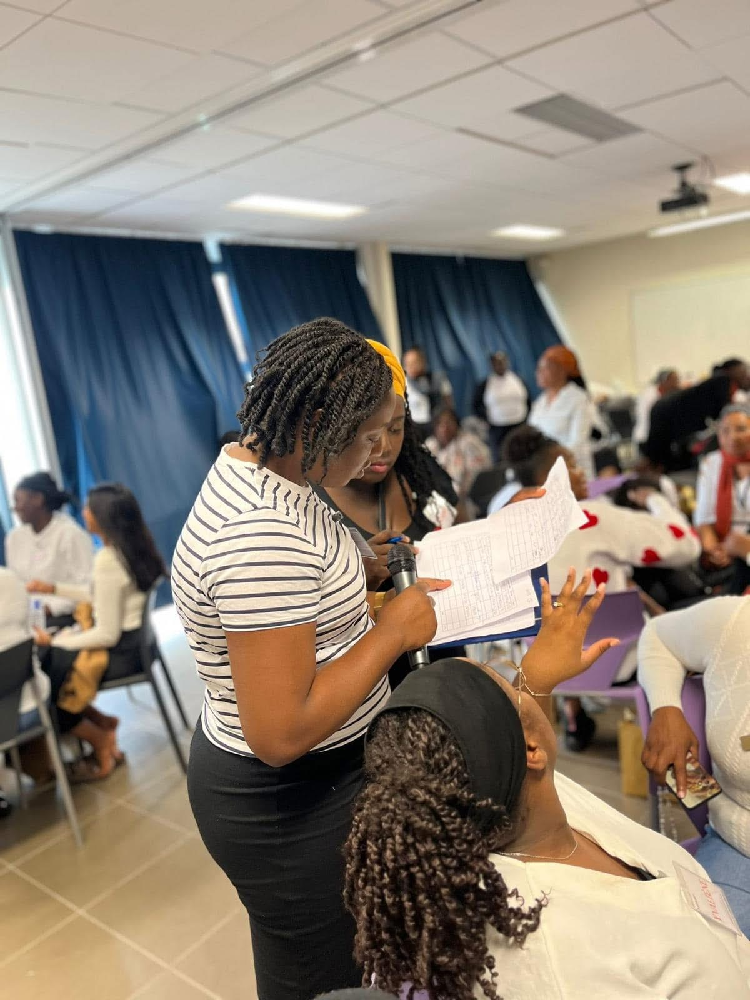
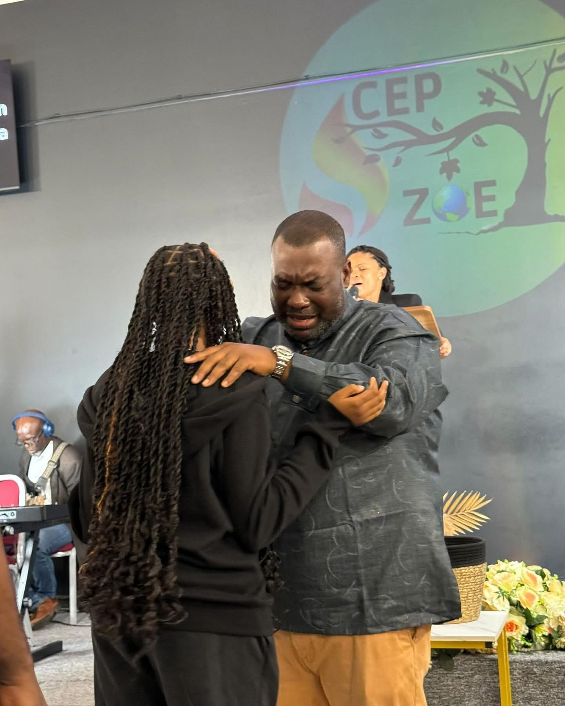

Nos cultes
Découvrez nos rendez-vous hebdomadaires de prière et d’adoration.
Notre Église est constamment en activité. Nous croyons à la croissance de nos membres par la prière, la connaissance de la parole et surtout l'assistance du Saint-Esprit. En temps ordinaire et en présentiel, nos services se déroulent à trois moments de la semaine : sous la forme de cultes d'adoration et de louanges le dimanche ou en veillée de nuit le vendredi soir et de jeûne de prière le mercredi matin. voir heure exacte dans la phto qui suit.

Nos membres
Une famille spirituelle engagée et accueillante.
Laissez venir à moi les petits enfenfants. Cette parole de Jésus-Christ en Matthieu 19.4 est la devise de notre système d'évangélisation. Nous croyons que tous êtres humains ont part à la maison de Dieu. Notre accueil est donc le même pour tous, venez comme vous êtes et notre père se chargera de ce qui aurait fait défaut.
Le leader
Conduire par le service.
Président de l'APHF, association des Pasteurs Haïtiens de France et de la mission Cep-Zoe, l'apôtre Adly est le leader principal de l'Église Cep Zoe d'Argenteuil. Marié en 2005 et père de trois enfants, il consacre sa vie en travaillant à temps plein pour le ministère. Adorateur, conférencier et écrivain, chaque détail de sa vie est un outil supplémentaire pour sa consécration dans le service.
Nos ministères
Un regroupement d'adorateurs dans leur domaine de cœur.
Chaque membre de l'Eglise Cep-Zoe d'Argenteuil a la possibilité d'intégrer un groupe et de grandir dans la foi. Pour cela nous vous orientons vers le groupe le plus approprié à votre statut. Les hommes, les femmes, les enfants, la musique.... Une infinité de portes reste ouverte, rien que pour voir votre foi s'enraciner un Dieu vivant et vrai, Notre Dieu.
    Messages encourageants
Des enseignements et méditations pour votre foi.
D'où vient le monde? Que se passe t-il après la mort? Puis-je être à nouveau moi-même après un avortement? Pourquoi j'ai parfois envie de me suicider? Pourrais je vraiment plaire à Dieu après avoir vécu longtemps dans la débauche? LA BIBLE, La bible a la réponse à toutes vos questions et nos préicateurs n'hésiteront pas à vous faire découvrir les quintessences de la parole du souverain créateur et maitre de l'univers. Nous pouvons vous amenez à entendre la réponse de Dieu et obtenir la délivrance.
Nouveaux croyants
Accompagnement et formation pour grandir dans la foi.
Ceux qui viennent à Christ s’engagent également dans un processus de maturité. Conscients de notre responsabilité chrétienne, nous ouvrons la porte de nos groupes de formations hebdomadaires à nos nouveaux membres. C'est l'occasion pour eux d'acquérir de la maturité tant sur le plan exégétique que pratique.
Ils connaîtront la vérité et la vérité les affranchira. Jean 8.32
À propos de nous
Notre mission et nos valeurs au service du Royaume.

Faire un Don
Votre contribution soutient les activités de l’Église et aide à propager la Parole de Dieu. Chaque don compte et participe à l’avancement du Royaume !
Faire un DonGalerie photos
Voici quelques moments forts de notre église :
Contact
- Téléphone : 06 61 88 07 54
- Email : secretariat.cepzoe@gmail.com
- Facebook : cep zoe
- YouTube : cep zoé officiel
- TikTok : @cepzoe_argenteuil